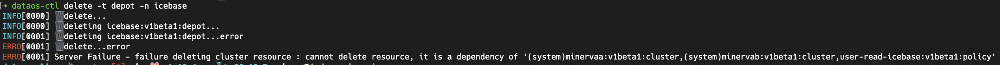

DataOS Command Line Interface¶
Structure of the DataOS CLI Command¶
Command subcommand flags parameters
List of DataOS CLI Commands¶
You can generate a list of all available commands with -h.
dataos-ctl --help
To get help for specific command use:
dataos-ctl command --help
Apply¶
Create and update resources in a DataOS cluster through running  apply. This command manages applications through .yaml files defining DataOS resources. You can use apply to recursively create and update DataOS objects as needed.
Usage:
dataos-ctl apply [flags]
Flags:
-h, --help help for apply
-l, --lint Lint the files, do not apply
-f, --manifestFile string Manifest file location
-o, --overrideWarnings Override the warnings and apply
-R, --recursive Get manifest files recursively from the provided directory
-w, --workspace string Workspace to target resource (default "public")
Completion¶
This mode places you in an interactive mode with auto-completion for the given shell (zsh or bash). To setup autocomplete in current bash shell, bash-completion package should be installed first.
zsh:
option 1 (speedy prompt startup time):
$ dataos-ctl completion zsh > ~/.dataos/.dataos-ctl-completion # for zsh users
$ source ~/.dataos/.dataos-ctl-completion
option 2 (always gets current commands):
$ source <(dataos-ctl completion zsh) # for zsh users
bash:
This depends on the bash-completion binary. Example installation instructions:
OS X:
$ brew install bash-completion
$ source $(brew --prefix)/etc/bash_completion
$ dataos-ctl completion bash > ~/.dataos/.dataos-ctl-completion # for bash users
$ source ~/.dataos/.dataos-ctl-completion
Ubuntu:
$ apt-get install bash-completion
$ source /etc/bash-completion
$ source <(dataos-ctl completion bash)
Additionally, you may want to output the completion to a file and source in your .bashrc or .zshrc
Usage:
dataos-ctl completion SHELL [flags]
Flags:
-h, --help help for completion
Context¶
Manage DataOS Contexts. A Context represents the connection to a DataOS  cluster/instance/environment and can be used to create depots, jobs, queries etc on that cluster.
Note: Only one context can be active.
Usage
dataos-ctl context [command]
Available Commands:
delete Delete DataOS Context
list List DataOS contexts
select Select DataOS Context
Flags:
-h, --help help for context
Use "dataos-ctl context [command] --help" for more information about a command.
Context List¶
Get the list of environments you have initialized using the dataos-ctl init command. The active context will be shown with a star and you can see its URL in the output.
Usage:
dataos-ctl context select [flags]
Flags:
-h, --help help for select
-n, --name string name of context to select
➜ ~ dataos-ctl context list
INFO[0000] * meerkat
INFO[0000] squirrel
INFO[0000] wholly-merry-orca
INFO[0000] üîó...https://cleanly-mutual-meerkat.dataos.io
Context Delete¶
Delete the context which is pointing to your DataOS environment.
Usage:
dataos-ctl context delete [flags]
Flags:
-h, --help help for delete
-n, --name string name of context to select
Context Select¶
Select a new context to point to, from the available environments.
Usage:
dataos-ctl context select [flags]
Flags:
-h, --help help for select
-n, --name string name of context to select
Delete¶
Delete resources in the DataOS.
Usage:
dataos-ctl delete [flags]
Flags:
-h, --help help for delete
-i, --identifier string Identifier of resource, like: NAME:VERSION:TYPE
-n, --name string Name of resource
--namespace string Namespace to target resource (default "default")
-t, --type string The resource type to get, possible values: depot, function, job, policy, service, secret

Datanet¶
Manage the Datanet of the DataOS.
Usage:
dataos-ctl datanet [command]
Aliases:
datanet, catalog
Available Commands:
create Create Entry in DataOS Catalog
dataset Manage Datasets in the DataOS Catalog
get Get Entry
heartbeat Send Workflow Run Entry Heartbeat
lifecycle Manage Run Entry Lifecycle
map-stack-run Map the Stack Run to a Run Entry
Flags:
-h, --help help for datanet
Use "dataos-ctl datanet [command] --help" for more information about a command.
Datenet Create¶
Create Entry in the DataOS catalog.
Usage:
dataos-ctl datanet create [flags]
Flags:
-h, --help help for create
--idOutputFile string Id output file location
-f, --manifestFile string Manifest file location
-o, --outputFile string Yaml output file location
--parentRunId string Parent Run Id to associate with the Child Catalog Entry
-p, --printRequest Print the request as yaml
-t, --type string Type of entry: workflow, workflow_run, job, job_run, service, service_run, topology
-w, --workspace string Workspace to target catalog entries (default "public")
Datanet Dataset¶
Manage datasets in the DataOS catalog.
Usage:
dataos-ctl datanet dataset [command]
Available Commands:
create Create Entry in DataOS Catalog
get Get Entry
versions Dataset Versions Entry
Flags:
-h, --help help for dataset
Use "dataos-ctl datanet dataset [command] --help" for more information about a command.
Datanet Dataset Create¶
Create Entry in the DataOS catalog.
Usage:
dataos-ctl datanet dataset create [flags]
Flags:
-h, --help help for create
--idOutputFile string Id output file location
-f, --manifestFile string Manifest file location
-o, --outputFile string Yaml output file location
-p, --printRequest Print the request as yaml
Datanet Dataset Get¶
Get Entry in the DataOS Catalog
Usage:
dataos-ctl datanet dataset get [flags]
Flags:
-a, --address string Dataset address
-h, --help help for get
-o, --outputFile string Yaml output file location
-v, --version string Dataset version
Datanet Dataset Versions¶
Dataset Versions Entry in the DataOS Catalog.
Usage:
dataos-ctl datanet dataset versions [flags]
Flags:
-a, --address string Dataset address
-h, --help help for versions
Datanet Get¶
Get Entry in the DataOS Catalog.
Usage:
dataos-ctl datanet get [flags]
Flags:
-h, --help help for get
-n, --name string Name or ID of the entry
-o, --outputFile string Yaml output file location
-r, --runId string Entry run id
-t, --type string Type of entry: workflow, workflow_run, job, job_run, service, service_run, topology
-w, --workspace string Workspace to target catalog entries (default "public")
Datanet Heartbeat¶
Send workflow run entry heartbeat in the DataOS catalog.
Usage:
dataos-ctl datanet heartbeat [flags]
Flags:
-h, --help help for heartbeat
-n, --name string Name of the entry
-o, --outputFile string Yaml output file location
-r, --runId string Entry run id
-t, --type string Type of entry: workflow_run, job_run, service_run
-w, --workspace string Workspace to target catalog entries (default "public")
Datanet Lifecyle¶
Manage Run Entry Lifecycle in the DataOS Catalog.
Usage:
dataos-ctl datanet lifecycle [flags]
Flags:
-h, --help help for lifecycle
-m, --message string Run state transition message
-n, --name string Name of the entry
-o, --outputFile string Yaml output file location
-r, --runId string Entry run id
-s, --state string Run state target transition, can be: start, complete, abort, fail
-t, --type string Type of entry: workflow_run, job_run, service_run
-w, --workspace string Workspace to target catalog entries (default "public")
Datanet Map-Stack-Run¶
Map the stack run to a run entry in the DataOS catalog.
Usage:
dataos-ctl datanet map-stack-run [flags]
Flags:
-h, --help help for map-stack-run
-n, --name string Name of the entry
-r, --runId string Entry run id
-s, --stackRunId string Stack run id
-v, --topologyVersion string Stack run topology version
-t, --type string Type of entry: workflow_run, job_run, service_run
-w, --workspace string Workspace to target catalog entries (default "public")
Develop¶
With this command , manage DataOS Development. You can test the changes on the local machine before directly aplying on the server.
Usage:
dataos-ctl develop [command]
Available Commands:
apply Apply development resources
get Get development containers
get-stack-version Get stack versions
log-stream Create development log-stream
port-forward Create development port-forward
start Start development container
stop Stop development containers
Flags:
-h, --help help for develop
Use "dataos-ctl develop [command] --help" for more information about a command.
Develop Create¶
Create a development container.
Usage:
dataos-ctl develop create [flags]
Flags:
-d, --dataDir string Directory containing the data
-h, --help help for create
-f, --manifestFile string Manifest file location
-s, --stack string Job stack
Develop Get¶
Get running development containers.
Usage:
dataos-ctl develop get [flags]
Flags:
-h, --help help for get
Develop Port-Forward¶
Create development port-forward.
Usage:
dataos-ctl develop port-forward [flags]
Flags:
-h, --help help for port-forward
-n, --name string Name of the Resource
--pod Forward specific pod directly
-p, --port string Port mapping of the Resource (default "3000:3000")
-t, --type string Type of the Resource (default "service")
-w, --workspace string Workspace of the Resource (default "public")
Develop Stop¶
Stop running development containers.
Usage:
dataos-ctl develop stop [flags]
Flags:
-i, --containerId string Container ID
-h, --help help for stop
Get¶
Use get to pull a list of resources you have currently on your DataOS cluster. The types of resources you can get include-depot, function, job, policy, service, secret.
Usage:
dataos-ctl get [flags]
Flags:
-d, --details Set to true to include details in the result
-h, --help help for get
-i, --identifier string Identifier of resource, like: NAME:VERSION:TYPE
-n, --name string Name to query
-r, --runtime Set to true to include runtime details in the result
--tags Set to true to include tags in the result
-t, --type string The resource type to get. Workspace resources: workflow, service, secret. Cluster resources: depot, policy.
-w, --workspace string Workspace to query
dataos-ctl -t workflow -w public -n quality-checks-test-cases get
dataos-ctl -i "quality-checks-test-cases | v1beta1 | workflow | public" get
INFO[0000] üîç workflow...
INFO[0002] üîç workflow...complete
NAME | VERSION | TYPE | WORKSPACE | TITLE | OWNER
----------------------------|---------|----------|-----------|----------------|----------------------
quality-checks-test-cases | v1beta1 | workflow | public | Quality-Checks | rakeshvishvakarma21
JOB NAME | STACK | JOB TITLE | JOB DEPENDENCIES
-----------------------------|------------|-------------------------|-------------------------
dataos-tool-quality-checks | toolbox | | quality-checks-summary
quality-checks-summary | flare:1.0 | quality-checks datasets |
system | dataos_cli | System Runnable Steps |
SCHEDULED RUNTIME | LAST SCHEDULED TIME
--------------------|----------------------------
RUNNING | 2021-11-01T16:30:00+05:30
RUNTIME | PROGRESS | STARTED | FINISHED
----------|----------|---------------------------|-----------
running | 2/3 | 2021-11-01T16:30:00+05:30 |
NODE NAME | JOB NAME | POD NAME | TYPE | CONTAINERS | PHASE
----------------------------------------|------------------------|------------------------------------------------------|--------------|-------------------------|------------
quality-checks-summary-bviw-driver | quality-checks-summary | quality-checks-summary-bviw-driver | pod-flare | spark-kubernetes-driver | running
Get Runtime¶
Get the runtime details of a resource in the DataOS.
Usage:
dataos-ctl get [flags]
Flags:
-d, --details Set to true to include details in the result
-h, --help help for get
-i, --identifier string Identifier of resource, like: NAME:VERSION:TYPE
-n, --name string Name to query
-r, --runtime Set to true to include runtime details in the result
--tags Set to true to include tags in the result
-t, --type string The resource type to get. Workspace resources: workflow, service, secret. Cluster resources: depot, policy.
-w, --workspace string Workspace to query
dataos-ctl get runtime -t depot -n icebase
dataos-ctl get runtime -w system -t cluster -n minervaa
dataos-ctl get runtime -w system -t service -n iosa-receiver
dataos-ctl get runtime -w public -t workflow -n cnt-city-demo-01
dataos-ctl -i "quality-checks-test-cases | v1beta1 | workflow | public" get runtime
dataos-ctl -i "quality-checks-test-cases | v1beta1 | workflow | public" get runtime
INFO[0000] üîç workflow...
INFO[0002] üîç workflow...complete
NAME | VERSION | TYPE | WORKSPACE | TITLE | OWNER
----------------------------|---------|----------|-----------|----------------|----------------------
quality-checks-test-cases | v1beta1 | workflow | public | Quality-Checks | rakeshvishvakarma21
JOB NAME | STACK | JOB TITLE | JOB DEPENDENCIES
-----------------------------|------------|-------------------------|-------------------------
dataos-tool-quality-checks | toolbox | | quality-checks-summary
quality-checks-summary | flare:1.0 | quality-checks datasets |
system | dataos_cli | System Runnable Steps |
SCHEDULED RUNTIME | LAST SCHEDULED TIME
--------------------|----------------------------
RUNNING | 2021-11-01T14:30:00+05:30
RUNTIME | PROGRESS | STARTED | FINISHED
----------|----------|---------------------------|-----------
running | 2/3 | 2021-11-01T14:30:00+05:30 |
NODE NAME | JOB NAME | POD NAME | TYPE | CONTAINERS | PHASE
----------------------------------------|------------------------|------------------------------------------------------|--------------|-------------------------|------------
quality-checks-summary-bviw-driver | quality-checks-summary | quality-checks-summary-bviw-driver | pod-flare | spark-kubernetes-driver | running
quality-checks-summary-execute | quality-checks-summary | quality-checks-test-cases-bviw-1635757200-996077945 | pod-workflow | main | running
quality-checks-summary-start-rnnbl | quality-checks-summary | -checks-test-cases-bviw-1635757200-3571325227 |
dataos-ctl -i "quality-checks-test-cases | v1beta1 | workflow | public" --node quality-checks-summary-bviw-driver get runtime
INFO[0000] üîç node...
INFO[0003] üîç node...complete
NODE NAME | POD NAME | IMAGE PULL SECRETS | PHASE
-------------------------------------|------------------------------------|---------------------------|------------
quality-checks-summary-bviw-driver | quality-checks-summary-bviw-driver | dataos-container-registry | Succeeded
CONTAINER NAME | CONTAINER IMAGE | CONTAINER IMAGE PULL POLICY
--------------------------|----------------------------------|------------------------------
spark-kubernetes-driver | docker.io/rubiklabs/flare:5.5.48 | IfNotPresent
POD CONDITION TYPE | POD CONDITION STATUS | MESSAGE | TIME
---------------------|----------------------|---------|----------------------------
Initialized | True | | 2021-11-01T15:45:26+05:30
PodScheduled | True | | 2021-11-01T15:45:26+05:30
Ready | False | | 2021-11-01T15:47:25+05:30
ContainersReady | False | | 2021-11-01T15:47:25+05:30
CONTAINER NAME | CONTAINER STATE | STARTED | FINISHED
--------------------------|--------------------------------|---------------------------|----------------------------
spark-kubernetes-driver | Terminated Reason:Completed | 2021-11-01T15:45:28+05:30 | 2021-11-01T15:47:25+05:30
| Message: ExitCode: 0 | |
EVENT TYPE | EVENT REASON | EVENT SOURCE | EVENT MESSAGE | LAST OCCURRED | COUNT
-------------|--------------|-------------------|-----------------------------------------------------|---------------------------|--------
Warning | FailedMount | kubelet | MountVolume.SetUp failed for | 2021-11-01T15:00:31+05:30 | 1
| | | volume "spark-conf-volume-driver" | |
| | | : configmap | |
| | | "spark-drv-9f60d37cdad602e6-conf-map" | |
| | | not found | |
Health¶
Get health of DataOS CLI, DataOS resources and services. It checks if server is reachable and helps in troubleshooting.
Usage:
dataos-ctl health [flags]
Flags:
-h, --help help for health
Here is the expected output of this command:
% dataos-ctl health
INFO[0000] üè•...
INFO[0000] DataOS® CLI...OK
INFO[0005] DataOS® CK...OK
INFO[0005] üè•...complete
INFO[0005] üîó...https://formerly-saving-lynx.dataos.io
INFO[0005] ⛅️...gcp
Help¶
Get help for any command in the application.
Usage:
dataos-ctl help [command] [flags]
Flags:
-h, --help help for help
Init¶
Initialize the DataOS environment.
Usage:
dataos-ctl init [flags]
Flags:
-h, --help help for init
Log¶
Get the logs for a resource in the DataOS.
Usage:
dataos-ctl log [flags]
Flags:
-f, --follow Follow the logs
-h, --help help for log
-i, --identifier string Identifier of resource, like: NAME:VERSION:TYPE
-r, --includeRunnable Include runnable system pods and logs
-n, --name string Name to query
-t, --type string The resource type to get, possible values: service, workflow
-w, --workspace string Workspace to query (default "public")
dataos-ctl log -w public -t workflow -n cnt-city-demo-01 --node city-execute
dataos-ctl log -w system -t cluster -n minervab --node minervab-ss-0
dataos-ctl -i "quality-checks-test-cases | v1beta1 | workflow | public" --node quality-checks-summary-bviw-driver log
INFO[0000] üìÉ log(public)...
INFO[0003] üìÉ log(public)...complete
NODE NAME | CONTAINER NAME | ERROR
-------------------------------------|-------------------------|--------
quality-checks-summary-bviw-driver | spark-kubernetes-driver |
-------------------LOGS-------------------
2021-11-01 08:32:06,938 INFO [task-result-getter-1] o.a.s.s.TaskSetManager: Finished task 54.0 in stage 1.0 (TID 69) in 17 ms on 10.212.16.7 (executor 1) (67/200)
2021-11-01 08:32:06,954 INFO [dispatcher-CoarseGrainedScheduler] o.a.s.s.TaskSetManager: Starting task 57.0 in stage 1.0 (TID 71) (10.212.16.7, executor 1, partition 57, PROCESS_LOCAL, 4472 bytes) taskResourceAssignments Map()
2021-11-01 08:32:06,954 INFO [task-result-getter-2] o.a.s.s.TaskSetManager: Finished task 56.0 in stage 1.0 (TID 70) in 17 ms on 10.212.16.7 (executor 1) (68/200)
...
...
...
you can also pass the "-c" command with the container name you want to see the logs for.
Login¶
Login to the DataOS.
Usage:
dataos-ctl login [flags]
Flags:
-h, --help help for login
Maintenance¶
Maintenance of the DataOS.
Usage:
dataos-ctl maintenance [command]
Available Commands:
collect-garbage collects garbage on the DataOS.
Flags:
-h, --help help for maintenance
Use "dataos-ctl maintenance [command] --help" for more information about a command.
Maintenance Collect-garbage¶
Collect Garbage on the DataOS.
Usage:
dataos-ctl maintenance collect-garbage [flags]
Flags:
-d, --duration string The duration to calculate the age of resources that are eligible for garbage collection (default "168h")
-h, --help help for collect-garbage
-k, --kubeconfig string Kubeconfig file location
-l, --layer string The layer to target in the DataOS, user|system (default "user")
Operate¶
Operate the DataOS.
Usage:
dataos-ctl operate [command]
Available Commands:
apply Apply manifest
chart-export Exports a Helm Chart from a Chart Registry
git Git component manifests
install Install components
ping Ping
upgrade Upgrade components
view View DataOS® Operator Services
zip Zip install files
Flags:
-h, --help help for operate
Use "dataos-ctl operate [command] --help" for more information about a command.
Operate Apply¶
Apply manifest on the DataOS.
Usage:
dataos-ctl operate apply [flags]
Flags:
-h, --help help for apply
-f, --manifestFile string Single Manifest File Location
-n, --namespace string Namespace
Operate Chart-Export¶
Exports a Helm Chart from a Chart Registry.
Usage:
dataos-ctl operate chart-export [flags]
Flags:
--accessKey string The AWS Access Key for ECR Chart Registry
--accessSecret string The AWS Access Secret for ECR Chart Registry
-c, --chart string The chart ref
-d, --exportDir string The directory to export the Helm chart
-h, --help help for chart-export
--region string The AWS Region for ECR Chart Registry
--registry string The AWS ECR Chart Registry
Operate Get-Secret¶
Gets a secret from Heimdall.
Usage:
dataos-ctl operate get-secret [flags]
Flags:
-h, --help help for get-secret
-i, --id string The secret id
Operate Git¶
Git component manifests on the DataOS.
Usage:
dataos-ctl operate git [flags]
Flags:
-e, --email string Operator email
-h, --help help for git
-l, --localOnly Perform local only
-n, --name string Operator name
-p, --push Push changes
-r, --resetGitDir Reset the local git directory
Operate Install¶
When you create a new server, you want to install new applications on the server. Use this command to install one or more applications/components on the server.
Usage:
dataos-ctl operate install [flags]
Flags:
-h, --help help for install
-i, --imagesFile string Installation Images File Location
-f, --installFile string Installation Manifest File Location
-n, --noGitOps Do not push changes to the GitOps repo in DataOS®
--oldReleaseManifest Use old install manifest format
--renderOnly Render only
-r, --replaceIfExists Replace existing resources
-s, --secretsFile string Installation Secrets File Location
--useExternalPostgresql Use external postgresql
-v, --valuesFile string Installation Values File Location
Operate Ping¶
Usage:
dataos-ctl operate ping [flags]
Flags:
-h, --help help for ping
Operate Upgrade¶
Upgrade components on the DataOS.
Usage:
dataos-ctl operate upgrade [flags]
Flags:
-h, --help help for upgrade
-i, --imagesFile string Installation Images File Location
-f, --installFile string Installation Manifest File Location
--oldReleaseManifest Use old install manifest format
-s, --secretsFile string Installation Secrets File Location
--useExternalPostgresql Use external postgresql
-v, --valuesFile string Installation Values File Location
Operate View¶
View DataOS Operator Services from the local machine without going to server. You can create a data pipe from server to local machine.
Usage:
dataos-ctl operate view [flags]
Flags:
-h, --help help for view
-p, --localPort int The starting local port to port-forward services to (default 8081)
-s, --servicesToPortForward strings The comma separated list of services to port-forward local:
metis,cerebro,aurora-beanstalkd,git,prometheus,
service-mesh,cruise-control,kibana,spark-history
➜ ~ dataos-ctl operate view -s metis
INFO[0000] üìö metis view...
INFO[0000] üî≠ metis port-forward..
INFO[0003] close connections hit enter/return?
INFO[0004] üî≠ metis port-forward.. ready
INFO[0004] : metis http://localhost:8081
Note: Config File ".dataos.ck.config" should be present in the folder "[/Users/[username]/.dataos/context].
TUI¶
Dataos-ctl TUI is a Terminal User Interface for DataOS. It shows all the key resources deployed on the server. You can click on the resource menu to see the corresponding details in the Resource Summary section. You can view artefacts and Run time services/resources and and their YAML. You can also view logs for runtime.
Usage:
dataos-ctl tui [flags]
Flags:
-h, --help help for tui
-w, --workspaces string list of workspaces to include, comma separated
User¶
Manage DataOS users.
Usage:
dataos-ctl user [command]
Available Commands:
apikey Manage a DataOS® User apikey
delete Delete a user
get Get users
tag Manage DataOS® User's tags
Flags:
-h, --help help for user
Use "dataos-ctl user [command] --help" for more information about a command.
User Apikey¶
Manage a DataOS user apikey.
Usage:
dataos-ctl user apikey [command]
Available Commands:
create Create an apikey for a user
delete Delete the apikey for a user
get Get the apikey for a user
Flags:
-h, --help help for apikey
Use "dataos-ctl user apikey [command] --help" for more information about a command.
User Delete¶
Delete a user
Usage:
dataos-ctl user delete [flags]
Flags:
-h, --help help for delete
-i, --id string Id of the user
User Get¶
Get users
Usage:
dataos-ctl user get [flags]
Flags:
-a, --all Get all users
-h, --help help for get
-i, --id string Id of the user
User Tag¶
Manage DataOS user's tags.
Usage:
dataos-ctl user tag [command]
Available Commands:
add Add tags to a user
delete Delete tags from a user
Flags:
-h, --help help for tag
Use "dataos-ctl user tag [command] --help" for more information about a command.
User Tag Add¶
Add tags to a user.
Usage:
dataos-ctl user tag add [flags]
Flags:
-h, --help help for add
-i, --id string Id of the user
-t, --tags strings The tags to add
User Tag Delete¶
Delete tags from a user.
Usage:
dataos-ctl user tag delete [flags]
Flags:
-h, --help help for delete
-i, --id string Id of the user
-t, --tags strings The tags to delete
Version¶
Print the version number of DataOS.
Usage:
dataos-ctl version [flags]
Flags:
-h, --help help for version
View¶
View core applications in the DataOS.
Usage:
dataos-ctl view [flags]
Flags:
-a, --application string The application to view in your default browser: apps, datanet, workbench, atlas
-h, --help help for view
Workspace¶
Manage DataOS workspaces.
Usage:
dataos-ctl workspace [command]
Available Commands:
create Create workspace
delete Delete workspaces
get Get workspaces
Flags:
-h, --help help for workspace
Use "dataos-ctl workspace [command] --help" for more information about a command.
Workspace Create¶
Create workspace.
Usage:
dataos-ctl workspace create [flags]
Flags:
-d, --description string workspace description
-h, --help help for create
--labels strings The workspace labels
-l, --layer string workspace layer (default "user")
-n, --name string workspace name
--tags strings The workspace tags
-v, --version string workspace version (default "v1beta1")
Workspace Delete¶
Delete workspaces.
Usage:
dataos-ctl workspace delete [flags]
Flags:
-h, --help help for delete
-n, --name string workspace name
Workspace Get¶
Get workspaces.
Usage:
dataos-ctl workspace get [flags]
Flags:
-h, --help help for get
-l, --layer string workspace layer (default "user")